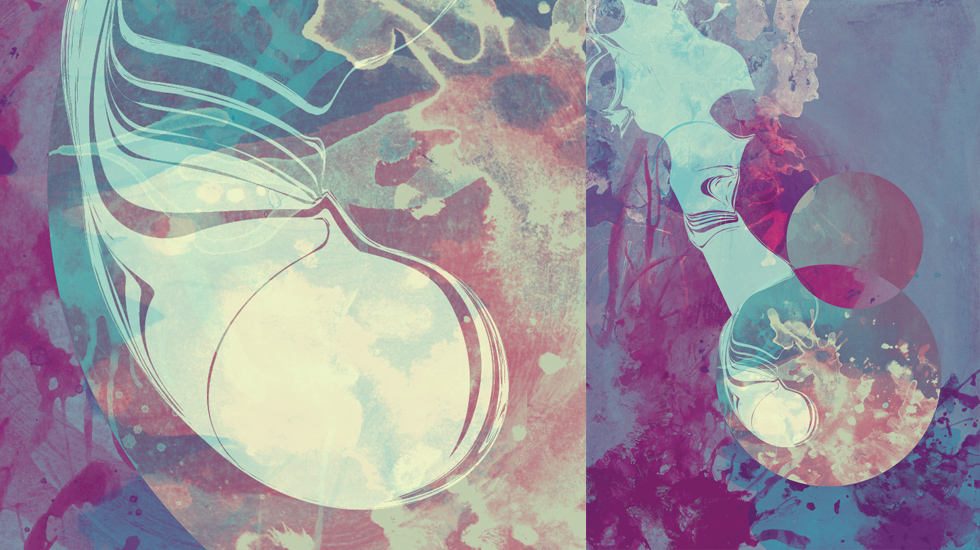

Aorma Vector Set
Drea Typeface
Dron Typeface
Monk Typeface
Nest Vector Set
Superstar Typeface
TypoFlat - Experimental Typeface & Then Some
My close friend (and Serbian brother) Branislav Cirkovic recently launched a new site featuring experimental typography and vector sets he created for personal and commercial use—free of charge. Bran is originally from Belgrade, Serbia, but is now living in southern California and works at 2Advanced Studios as an interactive designer.
Visit Typoflat and check out Bran’s interactive portfolio